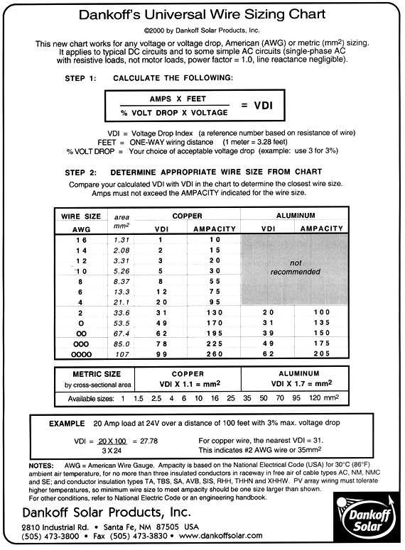

Solar Panels
About solar panels
A solar panel is a set of solar photovoltaic modules electrically connected and mounted on a supporting structure. Rest of the details you can check from here.
Various solar panels
-
On the basis of voltages ( search for solar panels as keyword in search field )
- 3 v, see in Probots site.
- 4 v, see here onlinetps
- 6 v, see here onlinetps
- 9 v, see here onlinetps
- 12 v, see here online tps
-
On the basis of current at ideal light
-
3 v will give 100mA, with plastic casing, costing Rs 150. See above link for details.
-
4 v will give 200mA, costing Rs 340. ( not in stock now)
-
6 v will give 500mA, suitable for running LCD based applications in decent sunlight. Costing Rs 700. check here.
-
9 v will give 300mA, aluminium casing with glass covered. cost Rs 590. See about this on the above mentioned link.
-
12 v will give 100mA, Check here. And another gives 590mA. Check here. this got maximum power of 10W.
Solar panels with battery as combination
-
-
With 12 v, 590mA solar, best combination said by OnlineTps Guys is 12v 1.3 Ah Lead Acid Battery costing Rs 430.
-
With 9v, 300mA solar, best combination said by same guys is 6 V 4.5 AH Lead Acid Battery.
-
Lead acid Battery are rechargable.
-
The above combination is suggested by Onlinetps guys.
Wire the solar panel

-
Only positive and negative wire runs out from the solar panel.
-
Circuit protections like
-
Fuses
-
Surge protection
-
Protection from back current
Solar panel wire calculation
-
-
To connect the components of a Solar Energy System, you will need to use correct wire sizes to ensure low loss of energy and to prevent overheating and possible damage or even fire.
-
12 volt 2% wire loss chart, check it here.

-
You can check this link here, says step by step setup of solar panel with battery.
- Correct wire size.
- Connecting the charge controller.
- Conecting Power Inverter.
- Connecting the Battery. Series/ Paralle connections comes into picture.
Detect battery’s SoC, State of charge
- You can see from here, you can find many ways to detect state of charge of battery.
- Using ready made IC for battery level detection.

- You can check the DIY of battery level detector with IC LM3914 where with few basic components we can detect battery level and make some arrangements so we can trigger event to let battery in charging mode and let solar panel on as primary power source.
- Another ready made battery level detector is here. and datasheet. This is DS2438 IC which is battery monitor IC.How to wire it? How to use it? Answers to these questions are left.
Mail me at Annim Banerjee